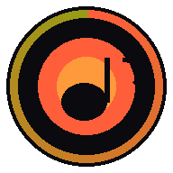

hAI.highfishMP3zPlayer streamt deine komplette Heimmusiksammlung — ohne Cloud, ohne Abo. PWA + Android APK, Shuffle, Passwortschutz, Album-Art.
mkdir -p /opt/mp3z && cd /opt/mp3z git clone https://github.com/jbkunama1/hAI.highfishMP3zPlayer_V2.git .
pip install -r requirements.txt --break-system-packagescp .env.example .env && joe .env # Anpassen: MUSIC_ROOT=/mnt/USBHDD_MP3z SMB_USER=daniel SMB_PASS=deinSambaPasswort API_KEY_OVERRIDE= # optional: eigener API-Key
python3 generate_icons.py ✓ icon-192.png ✓ icon-512.png
python3 mp3z_server.py 🎵 hAI.highfishMP3zPlayer v2.0.0 ✓ Index: 61243 Dateien in 18.3s
cp systemd/mp3z.service /etc/systemd/system/ systemctl enable mp3z && systemctl start mp3z
https://pwabuilder.com # URL eingeben → Android → Download Package
Portainer → Stacks → Add stack → Repository # Repo: jbkunama1/hAI.highfishMP3zPlayer_V2 # Pfad: docker-compose.yml (Referenz: main / vX.Y.Z) # Env: SMB_USER · SMB_PASS · API_KEY_OVERRIDE · DEFAULT_URL # Netz: highfishNetwork (vorher extern anlegen!) # Extern erreichbar auf Port 8066 docker pull ghcr.io/jbkunama1/hai.highfishmp3zplayer_v2:latest docker run -d --name mp3z -p 8066:80 --network highfishNetwork \ -v /mnt/USBHDD_MP3z:/music:ro \ -e SMB_USER=daniel -e SMB_PASS=deinSambaPasswort \ -e API_KEY_OVERRIDE=deinEigenerAPIKey \ ghcr.io/jbkunama1/hai.highfishmp3zplayer_v2:latest
{"apikey": "deinPasswort"}→ DEFAULT_URL, Titel, Version?path=Artist/Album&offset=0&limit=80?q=dire+straits&offset=0&limit=100?path=Artist/song.mp3&apikey=... Header: Range: bytes=0-
?path=Artist/Album&apikey=... Cache-Control: 86400
→ Anzahl Dateien, Build-ZeitHeader: X-API-Key: deinPasswort URL-Param: ?apikey=... (stream/art)